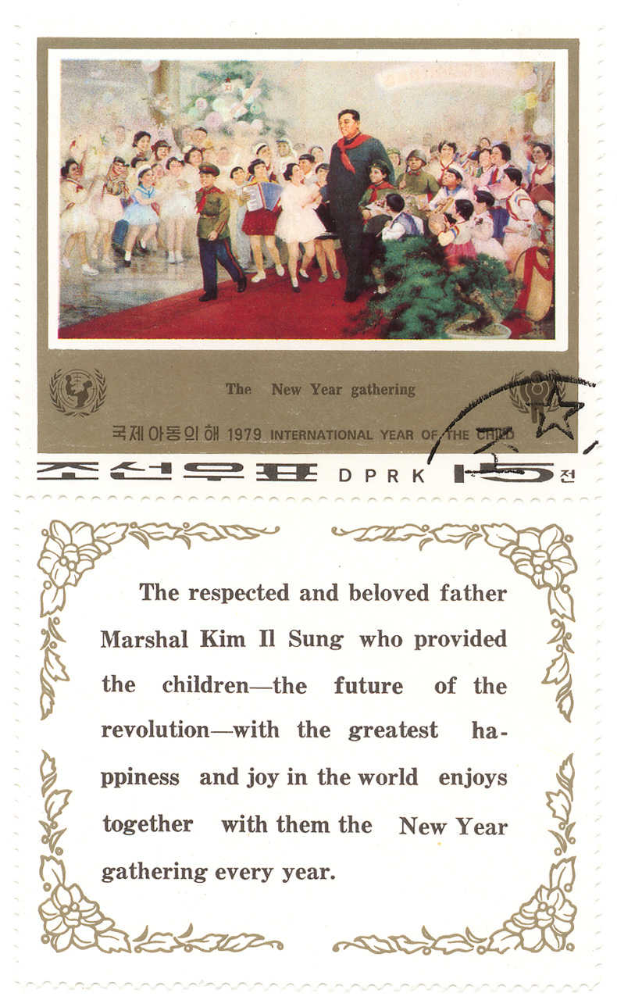
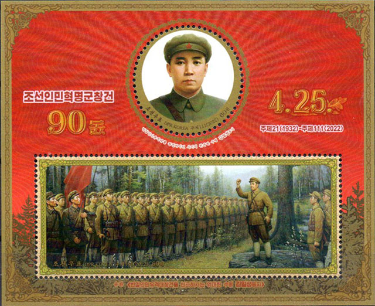

|
Created
09/03/1999. Revised:
1/10/2024
.
Copyright © 1999 - 2024 by Victor Manta, Switzerland/USA. All rights reserved worldwide. |
KIM IL SUNG'S RISE TO POWER
After the establishment of the Korean Workers Party, Kim Il Sung enjoyed the support of the occupying Soviet forces (until they withdrew in late 1948), and began playing a leading role in Korean affairs north of the 38th parallel. Under the Communist party and before the establishment of the Democratic Popular Republic of Korea, key political and economic reforms had already been made: elimination of moderate and right-wing elements, subordination of the formal government apparatus to Communist party control, suppression of religious and most other sectarian groups, confiscation of land and wealth formerly belonging to the Japanese or to enemies of the regime, and the initiation of party-directed economic planning and development.
Although Kim Il Sung emerged early as the principal leader, others contended for the top position. One of these, Pak Honyong, a Communist from the south, was executed after the Korean War; some believe that Pak was blamed for the loss of the war, the people of South Korea having failed to support the north as Pak had supposedly promised. Kim Tubong and other possible rivals were eliminated by the end of the 1950s, leaving Kim Il Sung in undisputed control. His personal power was buttressed by an extensive personality cult. From Microsoft Encarta 1996.
THE FATHER MARSHAL KIM IL SUNG AND CHILDREN, ON STAMPS

One example, among many others, of the personality cult of the communist leader, of the misuse of international humanitarian movements and of the deceitful propaganda is the set issued by North Korea in 1979, commemorating "The International Year of the Child". Please consider that the population of North Korea was not less starving of hunger in the late seventies (children and adults alike), then it is starving today in the nineties. The only difference is that at that time, due to the big influence of communism devotee in the free Western countries, it was considered politically incorrect to speak about the fact.

A sad page of history that isn't closed yet for the poor North Korean people, who's actual leader is nobody else than the grandson of Kim Il Sung!
Notice: In 1950 the communist Hungary has issued a set showing children. On one of stamps, showing a pioneer (Scott 899a - quickly replaced as erroneous), one can read: "Our descendants for the future fights."
|
Created
09/03/1999. Revised:
1/10/2024
.
Copyright © 1999 - 2024 by Victor Manta, Switzerland/USA. All rights reserved worldwide. |